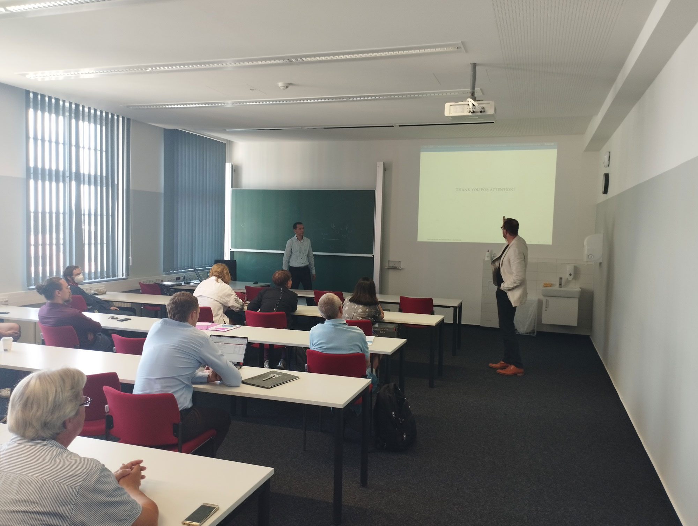
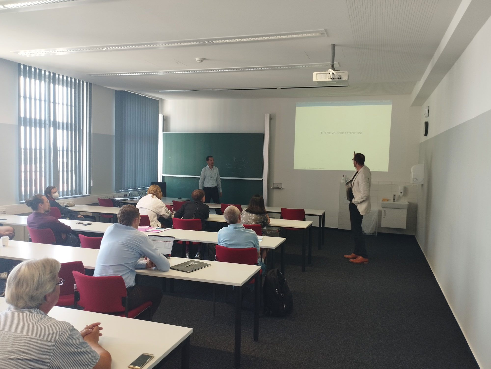

2022 (17.07-04.08) - 1-й год реализации проекта
В рамках проекта была осуществлена командировка руководителя проекта DSc Ж. Юсупова в университет Вуппертала (Германия) с целью согласования с зарубежным партнером плана по реализации проекта, детального обсуждения дальнейших действий, а также согласования графика поездок с обеих сторон. Кроме того, обсуждались актуальность, постановка и пути решения поставленных задач.

Руководитель проекта DSc Ж. Юсупов и зарубежный паeртнер Prof. M. Ehrhardt во время обсуждений (Institute of Mathematical Modelling, Analysis and Computational Mathematics).

В период командировки также была осуществлена поездка в университет Ильменау (Германия) c целью совместного сотрудничества по тематике проекта. Обсуждены задачи для совместного решения и подготовка статей для публикации полученных результатов.
 

Доклад руководителя проекта DSc, Ж.Юсупова на семинаре группы “Прикладной функциональный анализ” профессора C.Trunk (Institute of Mathematics)
2023 – 2-й год реализации проекта
Во втором полугодии запланирована командировка на две недели двух участников проекта в университет Вупперталя (Германия)
2024 – 3-й год реализации проекта
На второе полугодие запланирована командировка двух участников проекта на две недели в университет Вупперталя (Германия)
2025 – 4-й год реализации проекта
По плану во втором полугодии командировка двух участников проекта на две недели в университет Вупперталя (Германия)
2026 -– 5-й год реализации проекта
По плану во втором полугодии командировка руководителя проекта на две недели в университет Вупперталя (Германия) и зарубежного партнера на 7-10 дней в Технический институт Ёджу в г.Ташкенте (Узбекистан)